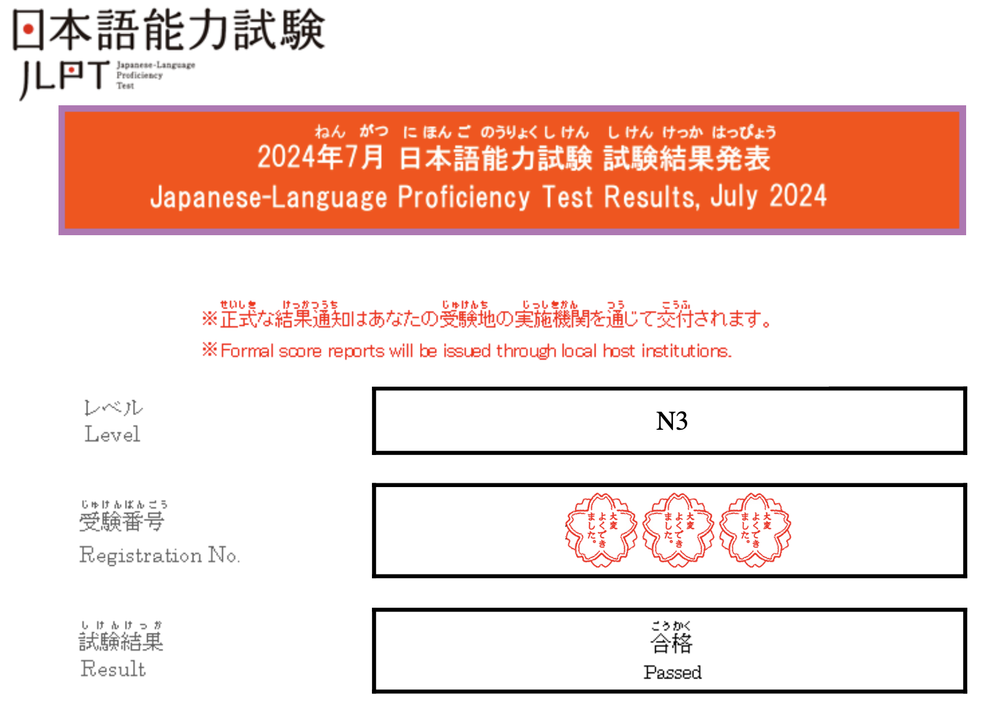
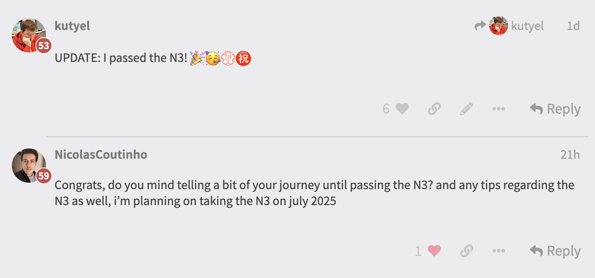
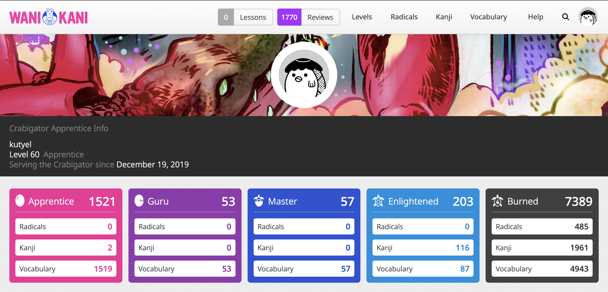
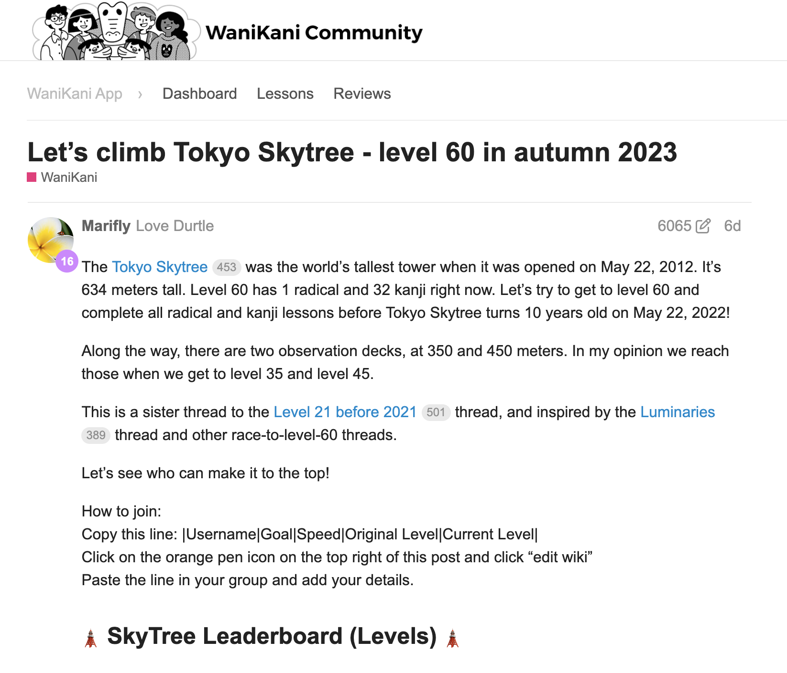
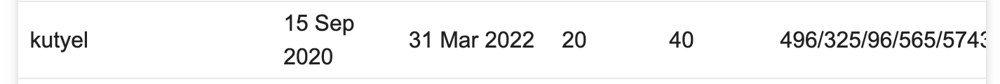
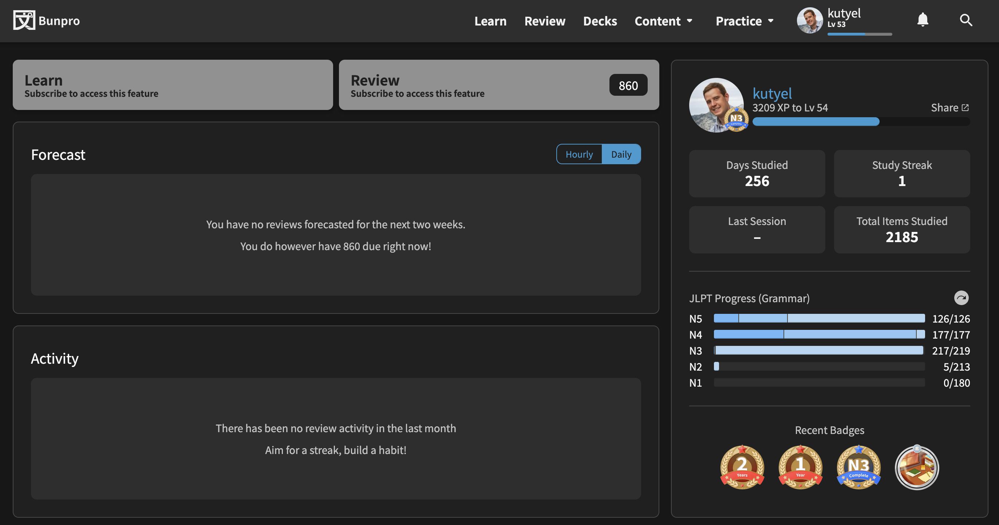

My Journey to Japanese N3 Level

Recently, on the Bunpro community forums I was asked about my particular Japanese learning journey, and I decided this was a topic where I really wanted to pour out my thoughts, so here I go!

It all started on my first trip to Japan in 2017, back then, only my younger brother knew a little bit of Japanese. Rather soon, it became really evident to us that indeed some degree of language knowledge was needed in order to travel efficiently around Japan. Even after our second trip, in 2023, the situation has not really improved an English is very scarce even for tourist-facing businesses! 🤯
Motivation
So I came back from our first trip to Japan in love with the country and its culture, as up until that point I had only travelled within Spain and some European countries. Really, as a western traveller, if you have never been to Japan (or Asia) before, the experience is just mind-boggling in a good way and I really enjoyed it, everything is different! And Japan is so incredibly clean and its citizens as polite as a modern human society can get. I forgot to mention that I had already watched maybe circa ~200 animes by that time (yes, I am a real w33b 😅).
Therefore I came back from our first trip determined to learn the language and enrolled the EOI (Official School of Languages by its acronym in Spanish, a language school organised by the state and almost free of charge) in the first year of Japanese. I was really lucky that from the very beginning the teacher was native (hi Norika! 🙇🏼♂️) and an excellent and passionate instructor of the language.
I reached a point in my life where I was already very happy with my English level (reached C2 around that time) and, since I love learning new languages, I decided that for my next challenge I would take up a tough one, rather than going for the low-hanging fruit and pick an “easy” European language (and boy how much trouble was waiting for me after that choice 😅).
EOI
I enrolled in the EOI for Japanese and have been styuding there for the last 5 scholar years. This was a great idea because it forced me to have some exposure to Japanese at least 4h/week. If you want to maximize your language learning you normally need to do some degree of cultural immersion, I can’t move to Japan right now so that is not going to happen, so I needed to expose myself to the language as much as possible within reasonable bounds.
I did this thanks to the EOI, watching anime, listening to J-POP (especially to RADWIMPS and Asian Kungfu Generation, my favourites 🤩) and attending language exchanges whenever the school or the local university organized them (交流会). These language exchanges are great for meeting natives and try and wet your feet and start to talk, but they are very short and not very well suited for introverts I’m afraid.
I felt extremely disappointed watching YouTube videos saying: HERE IS HOW I ACHIEVED N1 LEVEL IN 2 YEARS!! And they forgot to mention that they moved to Japan 😅. Please, language Youtubers, don’t do this. Do not deceive your audience and do not create false expectations on us language learners because the reality is… Japanese is HARD. REALLY HARD. In my own experience I would say that maybe x5 times harder than English, so we need to set reasonable expectations for ourselves, be patient and assume that language and culture learning are lifetime experiences, we should not hurry them!
One of the nice things about the EOI is that you learn progressively and by topic certain grammar and vocabulary that is aimed primarily, I would say, to visit Japan as a tourist and having everyday conversations. This is really nice but they do not force too much the Kanji on you (which is a mistake in my opinion), and so it happens that when you visit Japan and see complex kanji all around you get really overwhelmed, you basically can’t read 80% of what you see if you only know ひらがな/カタカナ.
Even though we do listening practice and some conversation, after 5 full years I’m still not fluent. I feel I’ve reached a point when I’m about to take off and I’m almost ready to start talking non stop, but that will have to wait. I have a lot of grammar and vocab knowledge by now, but feel that putting it together in conversation is a whole different beast. I will keep pushing though! 💪🏻
WaniKani
I did two things when I set my mind to learn Japanese: the first one was joining the EOI and the second one was to register into WaniKani, and when the end of the year sale came up (they have one every year) I purchased the lifetime membership.
I won’t hide the fact that I saw my little brother doing reviews on this website for a very long time and I knew from his experience that the method worked and he recommended it also.
WaniKani is an excellent website to learn kanji that uses an SRS (Spaced Repetition System) and fun mnemonics to help you remember each kanji’s meaning and different readings (yes, in Japanese there are sometimes more than one different reading per kanji! 🥹).

I really enjoyed the gamified nature of the website and could feel that I was making good progress, so I decided to join one of those races to the top that the WaniKani community does, and this was a terrible mistake that I would later regret…

While learning Japanese, one of the elephants in the room that no one wants to address are kanji (there are other elephants also, like 敬語 and the endless counters of the language), so I decided I would spend a little time each day to study kanji and that way I would get them out of my way ASAP. This was a really practical choice and one I’m very proud of because I was always ahead of my classmates in kanji knowledge and this also made possible to digest complex readings on an earlier stage. In fact I already knew most of the kanji needed to pass the N3 exam right after my first year of WaniKani. 😎
Consistency is key, and a bit of effort every single day goes a long way
Here is my final position in the Tokyo Skytree challenge, I joined when I was level 20 in WaniKani, and finished the challenge (reached level 60) only 18 months after joining.

What do I regret about joining the challenge? In order to prioritize Kanji learning, I dismissed vocabulary, using some external plugins to re-order the reviews of the website and only focus on radical/kanji. This is a terrible mistake because when you learn a radical/kanji in isolation, the way it remains forever in your brain is when you see actual WORDS with those kanji in your vocabulary. So doing this was very foolish of me and made me forget some Kanji that I should know by now, but I do not… DO NOT DO THIS!!
Bunpro

After some degree of success with KaniWani, I felt that I knew a lot of kanji, but could not say the same about grammar, that’s when I found Bunpro!
The idea to keep using an SRS but to learn grammar was very appealing, so I used Bunpro more or less for two years. I did not pay for the lifetime membership this time, just for two years because I wanted to try out the service before deciding to purchase the complete version.
The Noken focused grammar and vocabulary decks were really handy, that’s what I mostly used to learn all the grammar up to N3, so it was helpful to some degree.
But somehow, the gamification and overall interface of the website is not as engaging as WaniKani, so I could not keep my streak there for too long. Also something that annoyed me a little was the lack of custom decks. I found myself wanting to study for a particular quarter test for EOI and wanting to just put the grammar of the Marugoto books we were using in a custom deck, but currently this is not possible and it was a bit dissapointing. Hopefully they will add this functionality in the future! 🤞🏻 UPDATE: Indeed custom decks have been added as of 2025!
The JLPT Exams
Some people do not realise this, but exams are actually really important to consolidate your knowledge! Since I knew this, after my 1st year of EOI I took the JLPT N5 exam (the easiest) and passed it. The mark was enough to pass but not something incredible, my goal was just to set a milestone for myself and to succeed.
After the 3rd year learning Japanese in the EOI I decided to try out N4, and also passed it, again without a great mark but I will take it! 🎉 Finally, this year, after 5 years of learning Japanese I decided to give N3 a go, this was my original goal and I was a bit nervous… but as you might have guessed by reading this post, I succeeded again! 🙌🏻
The final struggle towards N3
After I enlisted to take the N3 exam on July 2024, the weeks were passing by and the school year of the EOI typically ends in May, so I needed to do something to prevent Japanese from escaping my brain! 🤣 (Summer holidays are tough!)
Thanks to my Japanese teacher, Norika, she lent me the 日本語総まとめ books to prepare for N3, which I found to be of great help because they are designed to study during a period of 6 weeks and you can interleave a bit of grammar/kanji/vocabulary each day.
I’ve used these 3 for N3 and they worked like a charm 🙌🏼 pic.twitter.com/I5Fb28Pe90
— Flavio 🏴☠️ (@FlavioCorpa) August 30, 2024
I sincerely believe I would have not passed the JLPT N3 test had I not used those final weeks to study and crystalize my knowledge!
Going forward
As I said at the beginning of this post, a language learning journey basically never ends, I’m STILL learning new English words almost everyday (all TV I consume and most fantasy/scifi books I read are in English), so I’m determined to do the same with Japanese! I will join again the next course of the EOI and will try and finally start talking as much I can, to see if I can breakthrough and sky rocket my learning process! 🤞🏻
Compared to other people that reached N1 level in 2 years, I don’t feel special at all, and rather feel a bit clumsy/embarrased for telling you that it took me 5 years to reach N3 level… but hey! Every person’s language journey is different, and I’m not going to feel ashamed about mine. 😉
I hope that if you are also learning Japanese, you got at least a couple of useful tips if you managed to read this far (sorry for the long blogpost LOL 🤣) and that you PLEASE do not repeat the same mistakes I fell for! 🙏🏻 I’m also really interested in knowing about your journey or any useful tips that worked for you, so feel free to comment down below in the blog or follow me on Twitter to keep the conversation going. 🌊
Best of luck in your Japanese learning journey! 👋🏻